Columns show normalized τ = 0, 0.5, 1; actual time is scaled by T_end. Rows include every algorithm scheduled by the immutable run plan.
| Algorithm / run status | Start (τ=0) | Midpoint (τ=0.5) | End (τ=1) |
|---|---|---|---|
| branch-and-bound run: run_20261012T042927Z__branch-and-bound__minmax__st70-fa79167d4566-93e4a763b9__r00__d97fb1f873c4 TIME_LIMIT; feasible=True; verified=True (CERTIFIED_CONTINUOUS); optimality=TIME_LIMIT | 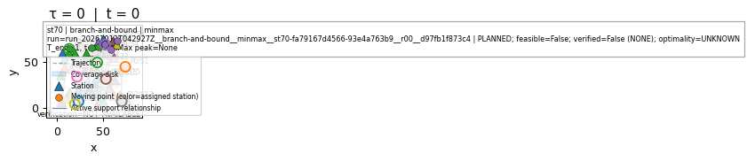 | 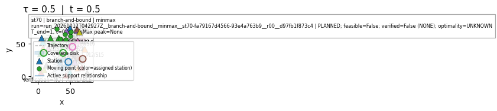 | 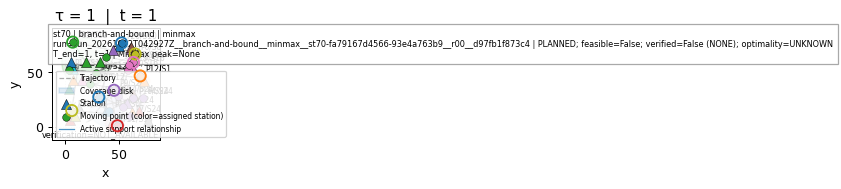 |
| brute-force run: run_20261012T042927Z__brute-force__minmax__st70-fa79167d4566-93e4a763b9__r00__1963d5f64912 FAILED; feasible=False; verified=False (NONE); optimality=FAILED | FAILED; feasible=False; verified=False (NONE); optimality=FAILED NO_SOLUTION_ARTIFACT | FAILED; feasible=False; verified=False (NONE); optimality=FAILED NO_SOLUTION_ARTIFACT | FAILED; feasible=False; verified=False (NONE); optimality=FAILED NO_SOLUTION_ARTIFACT |
| genetic run: run_20261012T042129Z__genetic__minmax__st70-fa79167d4566-93e4a763b9__r00__d10ddda7efc6 COMPLETED; feasible=True; verified=True (CERTIFIED_CONTINUOUS); optimality=FEASIBLE | 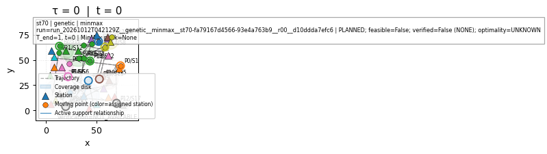 | 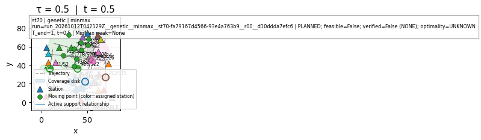 | 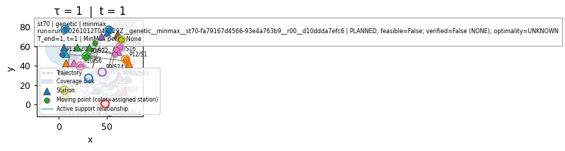 |
| greedy run: run_20261012T042129Z__greedy__minmax__st70-fa79167d4566-93e4a763b9__r00__83f88b5fd18c COMPLETED; feasible=True; verified=True (CERTIFIED_CONTINUOUS); optimality=FEASIBLE | 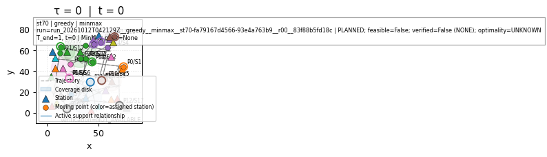 | 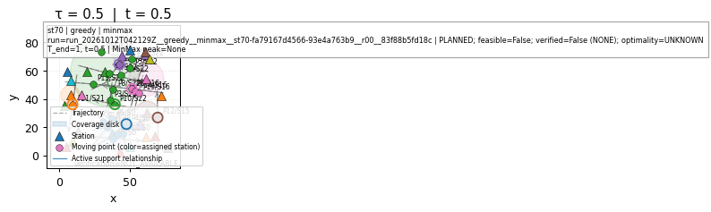 | 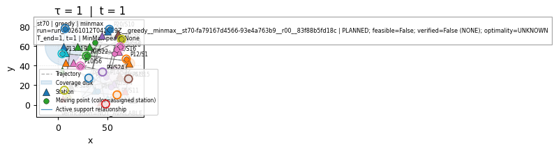 |
| ip-kont run: run_20261012T042927Z__ip-kont__minmax__st70-fa79167d4566-93e4a763b9__r00__a2d325e4eda8 SKIPPED; feasible=False; verified=False (NONE); optimality=UNKNOWN | SKIPPED; feasible=False; verified=False (NONE); optimality=UNKNOWN NO_SOLUTION_ARTIFACT | SKIPPED; feasible=False; verified=False (NONE); optimality=UNKNOWN NO_SOLUTION_ARTIFACT | SKIPPED; feasible=False; verified=False (NONE); optimality=UNKNOWN NO_SOLUTION_ARTIFACT |
| local-search run: run_20261012T042129Z__local-search__minmax__st70-fa79167d4566-93e4a763b9__r00__afe9aa5b3fec COMPLETED; feasible=True; verified=True (CERTIFIED_CONTINUOUS); optimality=FEASIBLE | 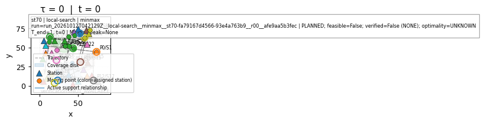 | 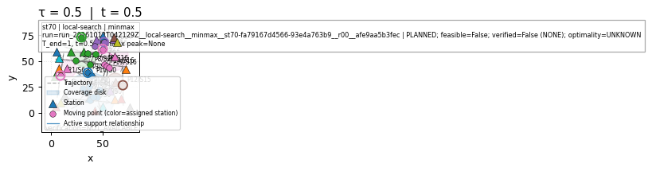 | 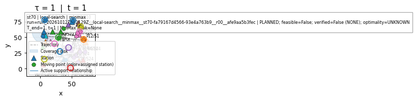 |
| lp-rounding run: run_20261012T042129Z__lp-rounding__minmax__st70-fa79167d4566-93e4a763b9__r00__9e959426a3b5 COMPLETED; feasible=True; verified=True (CERTIFIED_CONTINUOUS); optimality=FEASIBLE | 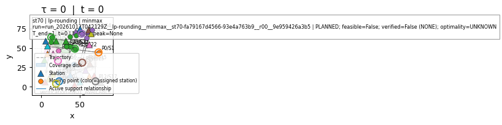 | 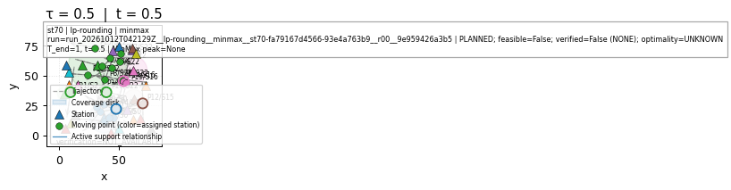 | 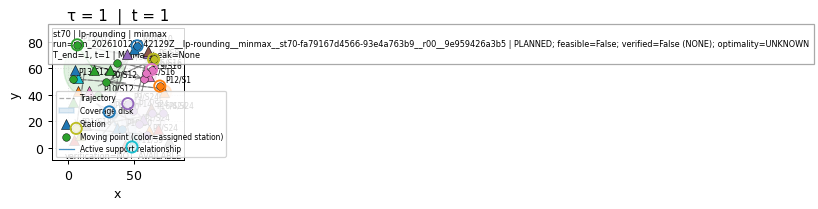 |
| nn run: run_20261012T042130Z__nn__minmax__st70-fa79167d4566-93e4a763b9__r00__927b2c644a5a COMPLETED; feasible=True; verified=True (CERTIFIED_CONTINUOUS); optimality=FEASIBLE | 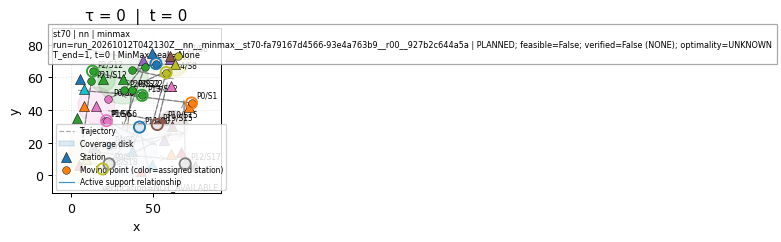 | 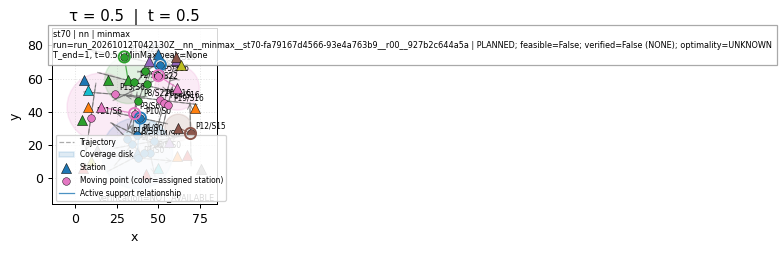 | 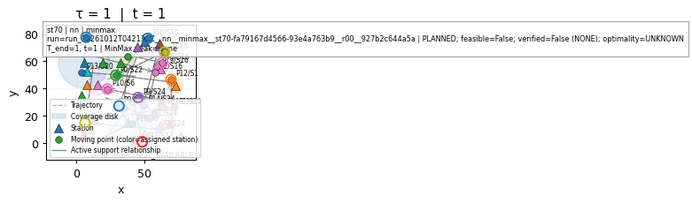 |
| primal-dual run: run_20261012T042130Z__primal-dual__minmax__st70-fa79167d4566-93e4a763b9__r00__f672a03a8d1e COMPLETED; feasible=True; verified=True (CERTIFIED_CONTINUOUS); optimality=FEASIBLE | 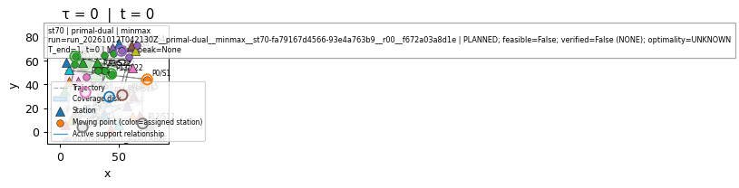 | 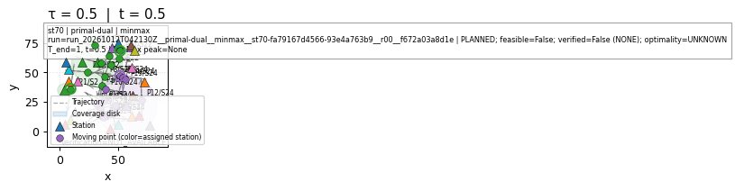 | 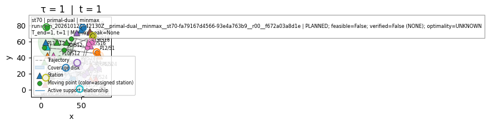 |
| sa run: run_20261012T042130Z__sa__minmax__st70-fa79167d4566-93e4a763b9__r00__59bc106c407c COMPLETED; feasible=True; verified=True (CERTIFIED_CONTINUOUS); optimality=FEASIBLE | 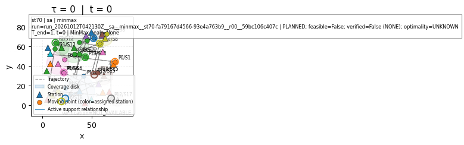 | 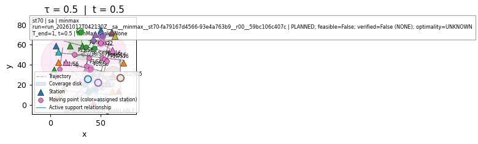 | 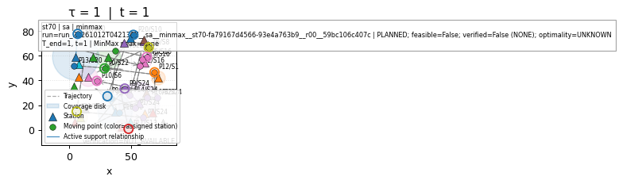 |
| shifting run: run_20261012T042130Z__shifting__minmax__st70-fa79167d4566-93e4a763b9__r00__864e88d06438 COMPLETED; feasible=True; verified=True (CERTIFIED_CONTINUOUS); optimality=FEASIBLE | 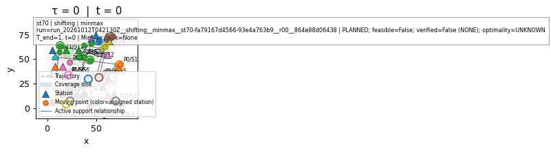 | 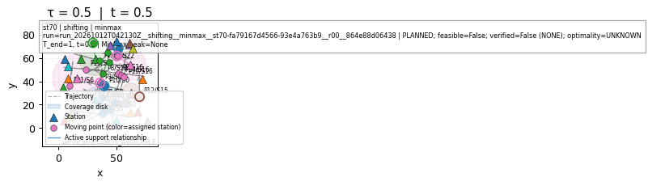 | 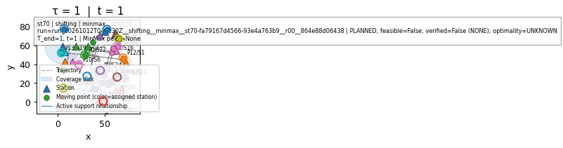 |